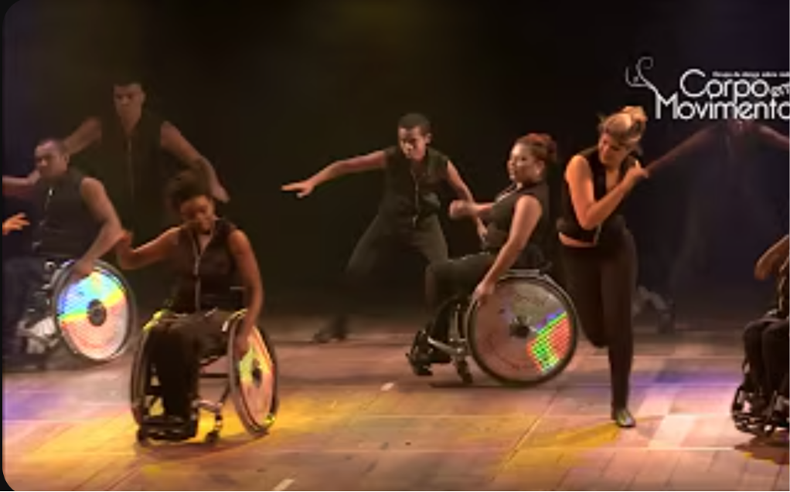

Durante uma aula de artes, realizamos uma atividade prática relacionada a luta contra o capacitismo na arte.

Fonte: Corpo em Movimento
O capacitismo é um preconceito estrutural que rotula corpos com deficiência como inferiores ou incapazes. Durante as aulas destacamos a importância de reconhecer a diversidade e o potencial criativo de todos os corpos.
Fomos até o centro Multiuso e assistimos diversos vídeos sobre as dificuldades e conquistas de pessoas com deficiências físicas na dança. Além de apresentações que incluíam dançarinos que não possuíam parte dos membros e/ou se locomoviam e dançavam utilizando cadeiras de rodas. Depois criamos passos de dança que fossem inclusivos para pessoas com alguma deficiencia especifica.